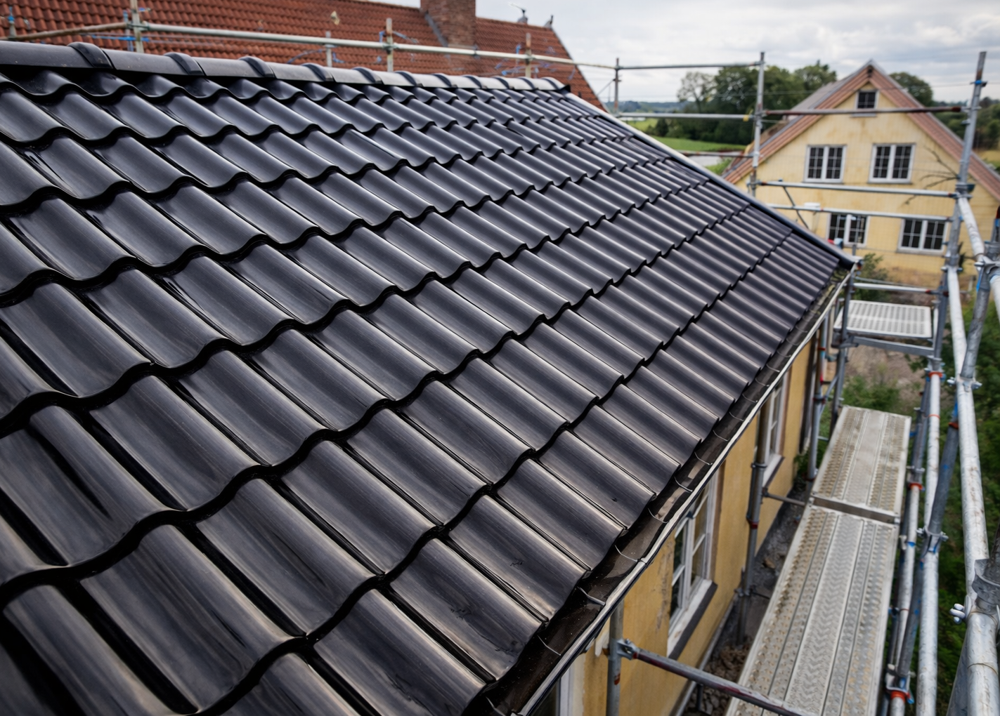
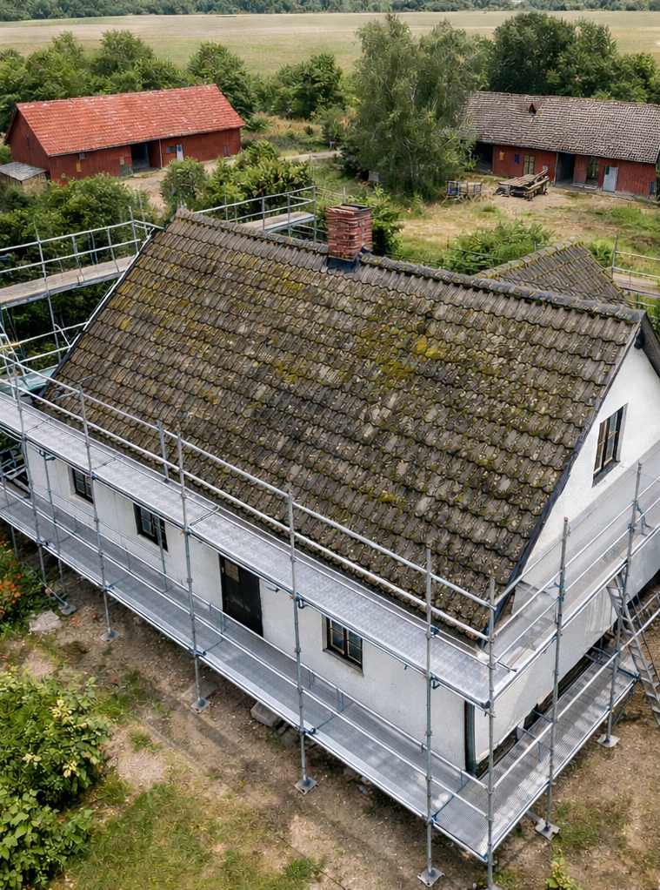

.png)
Takpannor i Skåne.
Vi lägger lertegel och betongpannor på villor i hela Skåne. Du får hjälp att välja panna, genomgång av underlaget och ett tak som monteras rätt från början.
Vilken takpanna passar huset bäst?
Vi går igenom profil, avrinning, vikt och husets uttryck tillsammans med dig så att du väljer rätt panna från början.
Vanliga val

Dubbelkupig takpanna
Ett beprövat val när du vill ha tydlig profil, bra avrinning och ett uttryck som passar många skånska villor.
Före och efter – när underarbetet gör skillnaden
På håll såg taket fortfarande helt okej ut, men när vi kom upp syntes slitage i pannor, läkt och detaljer runt genomföringarna. När vi gör om ett sådant tak byter vi inte bara det som syns. Vi går igenom underlag, infästningar och plåtdetaljer så att helheten blir tät och hållbar. Det är därför skillnaden efteråt inte bara handlar om utseendet. Huset får ett tak som fungerar bättre när regnet ligger på från sidan och vädret skiftar snabbt.

Rätt betongpannor för rätt förutsättningar
Takpannor är en beprövad lösning, men rätt val handlar om mer än utseendet. Lutning, underlag och husets konstruktion spelar minst lika stor roll.
Vad skiljer ett bra takpannearbete från ett dåligt?
Det handlar om rätt lutning på taket, rätt underlag och noggrant montage runt skorsten, ränndalar och hängrännor. Pannorna syns mest, men det är ofta detaljerna runt omkring som avgör hur länge taket håller.
Passar lertegelpannor mitt hus?
Kort svar: Oftast ja – om takets lutning och konstruktion är rätt.
Det här behöver stämma:
-
Taklutning: Lertegelpannor kräver vanligtvis en viss lutning för att fungera optimalt (exakt gräns beror på pannmodell)
-
Bärighet: Lertegelpannor väger mer än t.ex. plåt – därför ska underlag och läkt vara rätt dimensionerade
-
Detaljer: Skorsten, ränndalar, genomföringar och nock är där kvaliteten märks mest
Betongpannor eller lertegel?
Vad är Skillnaden?
Betongpannor
- Ofta prisvärda och jämna i form
- Bra val när du vill ha mycket för pengarna
- Finns i många färger och ytbehandlingar
Lertegelpannor
- Klassiskt uttryck och naturlig variation
- Ofta rätt val när huset redan haft tegel eller när uttrycket ska bevaras
- Åldras snyggt och passar särskilt bra på villor
Ska vi titta på ditt tak tillsammans?
Att byta tak är inget litet beslut. Därför erbjuder vi ett kostnadsfritt hembesök där vi går igenom ditt tak i lugn och ro. Du får en ärlig genomgång, tydliga svar och rekommendationer som passar just ditt hus.
Boka ditt kostnadsfria hembesökVilket material passar ditt hus?
En snabb jämförelse som hjälper dig välja rätt nivå av vikt, livslängd och underhåll.
Lertegelpannor
Rätt val när du vill bevara ett traditionellt uttryck och samtidigt få ett tak som håller länge.
Läs mer om lertegelpannorBetongpannor
Ett stabilt och prisvärt alternativ när du vill ha pannornas uttryck utan att gå upp i pris som lertegel ofta gör.
Läs mer om betongpannorPlåttak
Modern lösning med snabb montering. Fullt återvinningsbar och tålig mot det skånska klimatet.
Läs mer om plåttakPapptak
Ekonomiskt alternativ med enkel montering. Bra val för tillbyggnader och enklare tak.
Läs mer om plåttakVår arbetsmetod – därför håller våra tak längre
Ett takbyte är mer än ett ytskikt. Det är ett hantverk där varje lager måste fungera tillsammans. Så här jobbar vi:
Ställning
Vi börjar alltid med en stabil ställning. Det är grunden för allt säkert arbete och för att vi kan fokusera på detaljer istället för att oroa oss för säkerheten.
Underlagstäckning
Underlagstäckningen är inte bara ett skydd – det är försäkringen för ditt tak. Vi använder högkvalitativ underlagsmembran som stoppar fukt långt innan den når takets struktur.
Takfot & hängrännor
Hängrännorna är systemets arbetshäst – de leder vattnet säkert bort från huset och skyddar fasaden och grunden. Vi installerar dem så de fungerar felfritt år efter år.
Vindskivor & beslag
Vindskivor och beslag håller takets kanter säkra och skyddar mot vind och väder. De är essentiella för att hålla hela taket på plats och förhindra att vatten tränger in vid takets sidor.
Läktning & riktning
Vi rikterar taket noggrant så det får exakt rätt lutning. Det säkerställer att vattnet rinner av snabbt och inte stannar kvar, vilket är avgörande för takets långsiktiga hållfasthet.
Pannor
Pannorna är slutresultatet av allt grundarbete. De måste monteras med exakt rätt överlappning och fästning – varje panna på rätt plats – för att fungera tillsammans och skydda huset under årtionden.
Artiklar & guider
Läs mer om tak, fasad & energi

Dags för nytt tak? Så känner du igen tecknen
Läckage, mossa och sprickor du knappt ser utifrån – vi visar vad du ska titta efter.
Läs mer
Solceller i Skåne – vad det kostar och vad du får tillbaka
Vad 1 700 soltimmar om året faktiskt innebär för din elräkning.
Läs mer
Fasadrenovering i Skåne – material, process och vad det kostar
Flagnad färg, rötskador och dålig ventilation bakom panelen – tecknen och vad de kostar.
Läs mer
Bandtäckning – varför det håller längre än de flesta alternativ
Stående fals, minimalt underhåll och liten risk för läckage. När det passar och när det inte gör det.
Läs mer
Plåtslageri – beslagen som avgör om taket verkligen håller
De flesta takproblem börjar inte i pannorna – de börjar i beslagen, hängrännorna och genomföringarna.
Läs mer
Takpanneplåt – pannans utseende, plåtens fördelar
En bråkdel av vikten, pannans klassiska uttryck. När det passar och när det inte gör det.
Läs merBoka ett hembesök utan kostnad
Vi tittar på taket, bedömer skicket och föreslår rätt material. Ingen säljpitch, ingen bindning.
Boka ditt kostnadsfria hembesök Eller beräkna ditt takbyte online